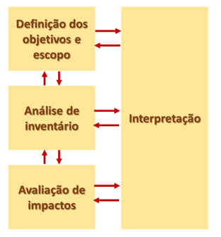
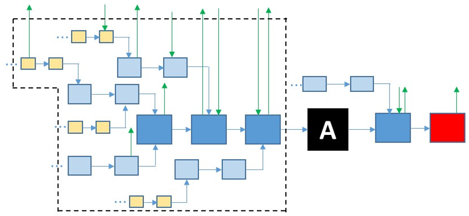

CAPÍTULO 3 QUAIS AS ETAPAS DE UMA ACV?
De maneira geral, uma típica Análise (ou avaliação) do Ciclo de Vida, de acordo com a norma ISO 14040, é composta pelas seguintes etapas que podem ser visualizadas na Figura 3.1.

Figura 3.1: Etapas da ACV (baseado em ISO14040)(ABNT, 2009a)
A partir de uma ordem lógica, na primeira fase da ACV, as premissas da análise devem ser claramente definidas. O que foi ou não considerado é fundamental para que a análise seja conduzida de maneira transparente, e que os resultados possam ser reproduzidos e comparados com outros estudos.
Daí segue-se para a etapa de elaboração do inventário. Esta etapa é o coração da ACV, e consiste na caracterização quantitativa e qualitativa de todas as etapas e processos considerados no ciclo de vida. De maneira geral, a qualidade dos resultados depende em grande parte da qualidade do inventário.
A ACV em si, ocorre na terceira etapa quando os fluxos inventariados são traduzidos em impactos ambientais a partir de metodologias próprias.
Por fim, segue-se a interpretação dos resultados. Vale salientar que é muito comum numa ACV, durante a fase de interpretação, retornar a etapas anteriores para fins de ajuste e remodelagem.
A seguir, cada uma destas etapas é detalhada.
3.1 Etapa 1 - Definições
Nesta etapa, apresentam-se os objetivos e a extensão do estudo pretendido. Enfim, quais são as perguntas que o estudo pretende responder. Da mesma forma, alguns itens devem estar claramente definidos no estudo, como: as fronteiras do sistema a ser analisado, a unidade funcional, a abordagem utilizada para os casos de coprodução. Em geral, é comum que as categorias de impacto consideradas e os métodos empregados sejam também mencionados nesta primeira etapa.
Entende-se por sistema produto, as etapas e processos produtivos que estão dentro das fronteiras do sistema (vide Figura 3.2).

Figura 3.2: Fronteiras do “berço ao portão” (cradle-to-gate) de um sistema-produto para a produção de “A”. Linhas azuis: fluxos-produto; Linhas verdes: fluxos elementares; Quadrados azul-escuro: processos foreground; Quadrado vermelho: processo de disposição final; Demais quadrados: processos background.
Ao se estabelecerem as fronteiras do sistema, consegue-se elencar os fluxos de entrada e saída, além dos fluxos intermediários.
Os fluxos de entrada correspondem a recursos, obtidos diretamente da natureza (fluxos elementares), ou a insumos provenientes de outros processos produtivos (fluxos-produto). Ainda, tais fluxos podem abranger outros parâmetros, nem sempre simples de quantificar, como os fluxos associados ao uso da mão de obra. Por sua vez, os fluxos de saída associam-se aos efluentes e resíduos gerados (na forma de fluxos elementares), bem como ao produto e subprodutos do processo. Em geral, os processos do ciclo de vida nos quais o analista possui algum controle, quer seja na sua descrição ou gestão (processos foreground), são aqueles mais próximos do produto de interesse e que impactam mais os resultados finais. Porém, dependendo das fronteiras do sistema-produto, outros processos fora do controle do analista devem ser acionados ao longo da análise (processos background) a partir de base de dados específicas.
É conveniente reportar quais os fluxos que não serão contabilizados em função de critérios de corte pré-definidos. Por exemplo, dependendo do sistema analisado, é comum não serem considerados fluxos associados a insumos químicos usados em pequenas quantidades (ex: catalisadores) ou a fluxos referentes a infraestrutura (ex: reatores, prédios industriais, etc), uma que vez que estes representariam uma parcela muito pequena nos resultados finais quando se consideram a vida útil do prédio ou dos equipamentos.
As fronteiras do sistema consistem num aspecto sensível da análise, uma vez que em ACV, contabilizam-se os fluxos que cruzam a fronteira. Não existem regras gerais que delimitem as fronteiras a serem consideradas. Assim, uma ACV pode ser conduzida:
do “berço ao túmulo” (cradle to grave), isto é, quando se contabiliza todas as etapas do ciclo de vida de produto, considerando a aquisição de matéria-prima, produção do produto, distribuição, uso e disposição final;
do “berço ao portão” (cradle to gate), quando são contabilizas as etapas do ciclo de vida até a “porta da indústria, ou seja, impactos associados ao uso do produto, disposição final e, eventualmente distribuição, não são considerados.
do “portão ao portão” (gate to gate), quando se considera apenas uma etapa do processo produtivo.
A fim de tornar a análise homogênea, os fluxos sempre devem estar relativos a uma unidade funcional pré-definida, como volume, massa, energia ou ainda outra unidade que faça referência à função do produto analisado. Logo, tanto o inventário como os resultados de uma ACV, geralmente são expressos a partir desta unidade funcional, ou seja: a área total ou energia ou água demandada para produzir um kg de produto, ou a emissão de poluentes para o solo por m³ do produto obtido, ou ainda, o total de emissões atmosféricas por cada item de produto. Vê-se nos exemplos acima que “kg de produto”, ou “m³ de produto”, ou “item” seriam as unidades funcionais assumidas para aqueles estudos.
Para sistemas de produção de hidrogênio –em especial em análises do berço ao portão – é conveniente que os resultados da ACV sejam reportados juntamente com as características do hidrogênio produzido, como o estado físico do hidrogênio na saída, pressão e grau de pureza. Isso permitiria uma mesma base de comparação, visando captar diferenças nos aspectos produtivos do hidrogênio e não necessariamente no seu uso.
Por fim, nesta primeira etapa da ACV, deve-se deixar claro qual é a abordagem assumida para sistemas com multi-produção, ou seja, processos produtivos dos quais obtêm-se mais de um produto. Tal fato é observado, por exemplo, na eletrólise da água quando se obtém hidrogênio e oxigênio. A abordagem adotada também consiste num aspecto sensível da análise, podendo ocasionar relevantes diferenças nos resultados finais.
As normas ISO (ABNT, 2009b, 2009a) sugerem uma ordem de preferência destas possíveis abordagens: primeiro deve-se tentar subdividir o sistema a fim de serem contabilizados apenas os fluxos associados à produção do produto de interesse. Porém, nem sempre isso é possível, como, por exemplo, em casos quando mais de um produto é obtido a partir de reações químicas. Na sequência, a norma sugere que as fronteiras do sistema sejam expandidas a fim de contabilizar eventuais créditos devido à substituição de processos convencionais por produtos obtidos no sistema analisado. Por fim, pode-se tentar dividir a “carga ambiental” entre os produtos, considerando a relação física (massa ou energia, por exemplo) ou econômica entre eles. A aplicação destas abordagens ficará mais clara com os exemplos a seguir (vide seção 5).
3.2 Etapa 2 - Inventário do Ciclo de Vida
Nesta etapa contabilizam-se quali-quantitativamente os fluxos, de entrada e saída, considerados na análise em função das fronteiras definidas anteriormente. Deve-se atentar para a representatividade e o método de coleta de dados a fim de garantir uma boa qualidade dos mesmos e, consequentemente, a confiabilidade e a comparabilidade dos resultados.
Para fins de elaboração do inventário, conforme mencionado anteriormente (Figura 3.2) denominam-se fluxos elementares todos os fluxos que cruzam as fronteiras do sistema-produto e vão diretamente para o ambiente ou que são provenientes diretamente da natureza. Dentre exemplos de fluxos elementares, pode-se citar os recursos naturais (água, minerais, etc) ou emissões de substâncias para o solo, água ou ar.
Ainda, fluxos-produto (vide Figura 3.2) são provenientes de outros processos produtivos. Ao modelar uma ACV em softwares específicos, o usuário sempre deve sinalizar a origem de cada fluxo-produto. Ou seja, se no sistema analisado, consome-se eletricidade, na modelagem deve-se assumir não apenas a fonte de eletricidade, mas qual ciclo de vida acionado para gerar aquela demanda de eletricidade, como, por exemplo: eletricidade a partir de gás natural em condições americanas ou européia, ou eletricidade a partir de fonte eólica considerando uma média mundial, ou eletricidade a partir de fontes hídricas associadas a grandes reservatórios, etc. Existem várias bases de dados (para processos background), gratuitas ou não, que trazem os mais variados inventários em variadas condições e localizações geográficas. Seguem alguns exemplos: Ecoinvent; U.S.LCI, Agri-footprint, SICV, entre outras.
3.3 Etapa 3 - Avaliação do Ciclo de Vida
Nesta etapa, os fluxos inventariados anteriormente são devidamente caracterizados. Em outras palavras, é como se o analista colocasse uma “lente” e passasse a enxergar todos aqueles fluxos de insumos, matéria-prima, energia, efluentes e emissões sob uma ótica específica de potenciais impactos ambientais. Para tal, são utilizadas metodologias baseadas em mecanismos ambientais que traduzem (caracterizam) aqueles fluxos inventariados em uma determinada categoria de impacto.
Neste contexto, existem várias metodologias possíveis de serem utilizadas. Pode-se citar algumas: ReCiPe, BEES+, AWARE e CML. Vale recordar que as metodologias possuem características específicas, podem abranger várias ou apenas uma categoria de impacto, com diferentes fatores de caracterização.
Por outro lado, as categorias de impacto podem ser classificadas como midpoint ou endpoint. No primeiro caso, foca-se no potencial impacto, como: nível de toxicidade, aquecimento global, depleção na camada de ozônio, eutrofização, entre outros. No segundo caso, foca-se no dano ambiental em si, como: extinção de espécies, mortes e depleção de recursos. Em geral, softwares especializados para ACV já são abastecidos com estas metodologias. Nas referências deste material, encontra-se o relatório da metodologia ReCiPe (Huijbregts et al., 2016), atualmente muito utilizada em ACV. No relatório são mencionadas as várias categorias midpoint e endpoint consideradas, bem como a descrição dos mecanismos ambientais assumidos.
3.4 Etapa 4 - Interpretação
Por fim, a interpretação dos resultados é uma das etapas mais relevantes da ACV, pois pode servir de base para tomadas de decisão a nível individual, corporativo ou até nacional. Num dos últimos módulos deste curso, fala-se rapidamente sobre políticas nacionais de baixo carbono, onde pode-se ver como muitas delas se baseiam em ACV.
Nesta etapa, os resultados podem ser analisados e comparados com outros sistemas. Porém, deve-se ter o cuidado de sempre verificar quais as premissas adotadas nos estudos. Conforme salientado anteriormente, os estudos são muito sensíveis a tais premissas.
Da mesma forma, é muito interessante comparar a contribuição de cada etapa do ciclo de vida nos resultados finais. Nesta análise, denominada de “contribucional”, pode-se observar onde estariam os gargalos de processo ou de logística que, eventualmente, poderiam ser melhorados visando o melhor desempenho ambiental do produto. Análises de sensibilidade ou de incerteza também podem ser conduzidas nesta etapa.